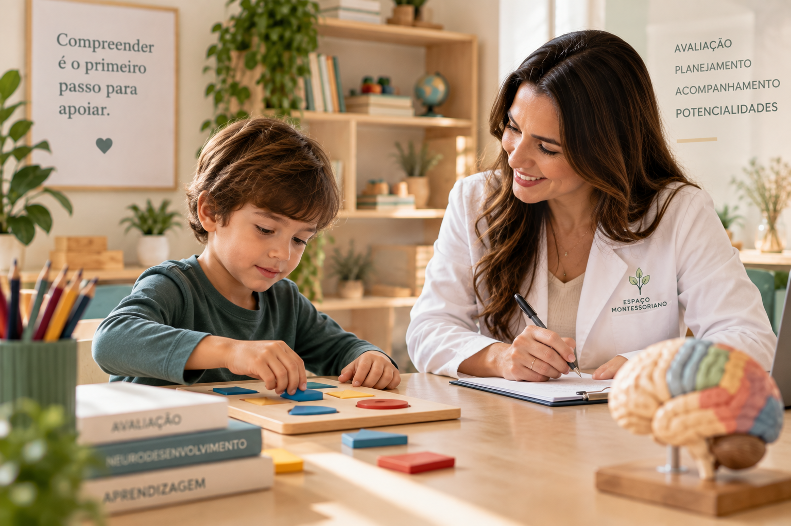
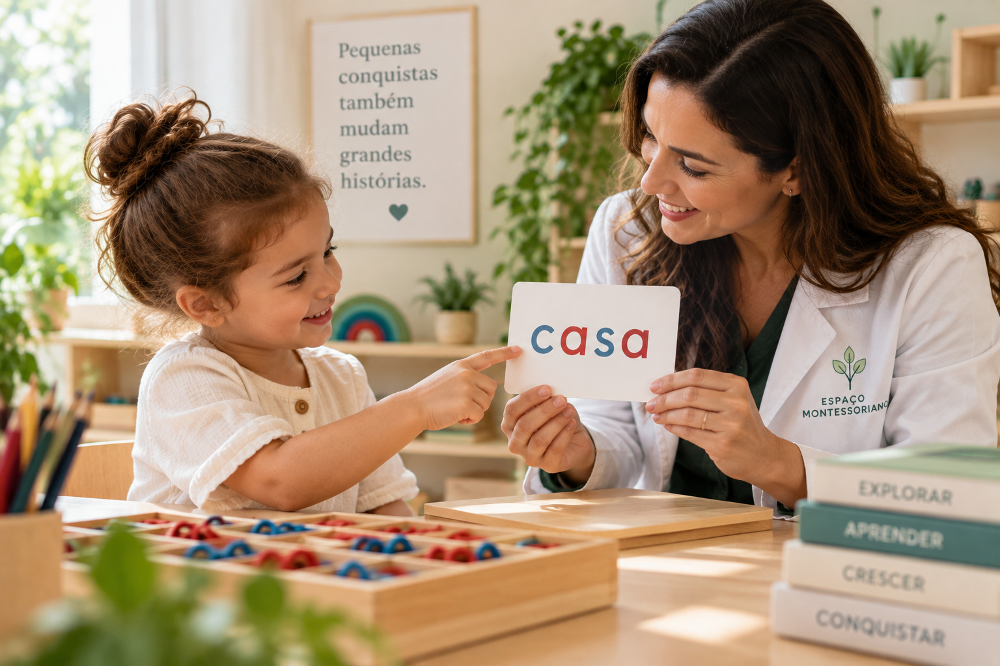
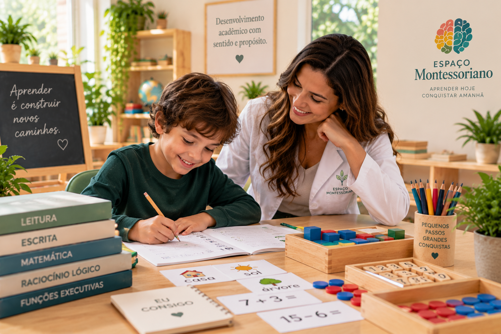
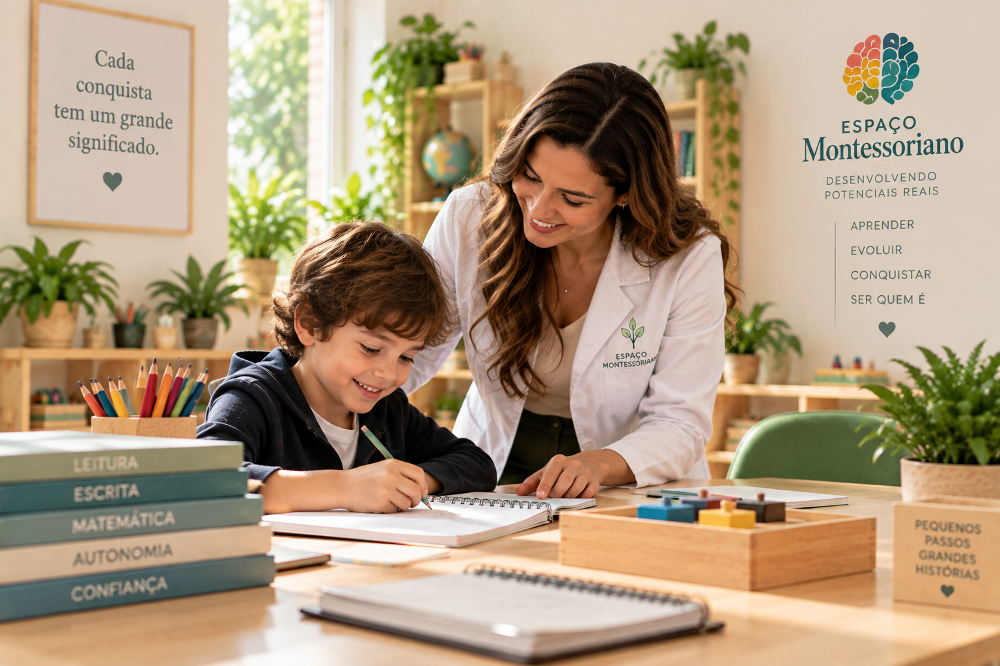
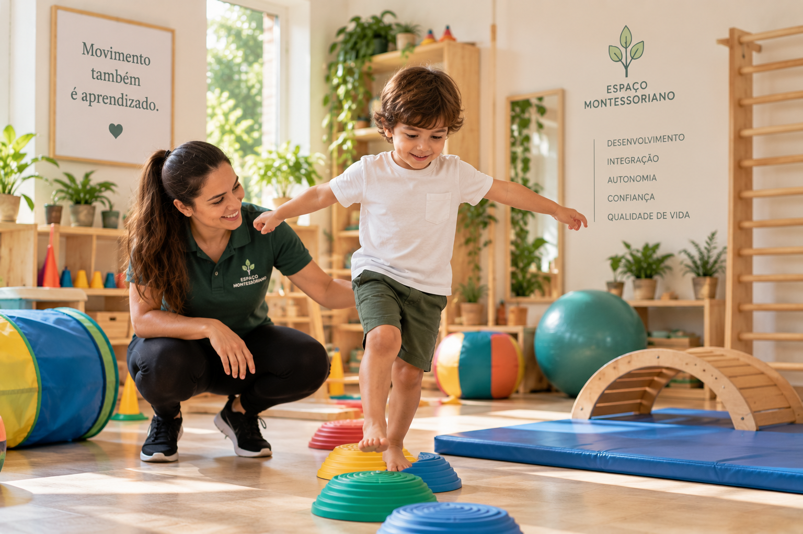
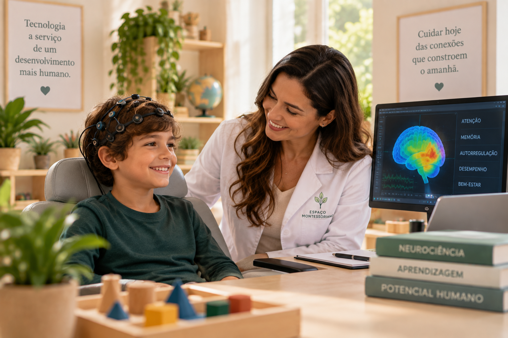
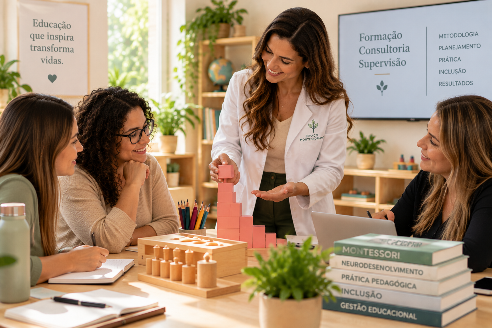

Cada criança é única.
O cuidado também precisa ser.
Neurodesenvolvimento, aprendizagem e desenvolvimento integral conectando ciência, educação, família e escola.

Mais do que atender uma dificuldade, compreender uma história.
Aprendizagem, linguagem, comportamento, emoções, funções executivas, autonomia, desenvolvimento motor e relações sociais fazem parte de um mesmo percurso.
Conheça nossa história
“Ajude-me a fazer por mim mesmo.”
— Maria Montessori
Diferentes especialidades.
Um mesmo propósito.
O acompanhamento é construído a partir das necessidades de cada criança ou adolescente, articulando diferentes áreas quando indicado.
Conheça as especialidades

Psicopedagogia
Aprendizagem, alfabetização, leitura, escrita, matemática e funções executivas.
Saiba mais →Fonoaudiologia
Linguagem, fala, comunicação, leitura, escrita e habilidades relacionadas à aprendizagem.
Saiba mais →Psicologia
Desenvolvimento emocional, comportamental e habilidades necessárias à participação cotidiana.
Saiba mais →Psicomotricidade
Desenvolvimento corporal, motor, perceptivo, espacial e organização da ação.
Saiba mais →Intervenções baseadas em ABA
Estratégias fundamentadas nos princípios da Análise do Comportamento Aplicada, conforme necessidades individuais.
Saiba mais →Acompanhamento Pedagógico
Apoio acadêmico individualizado, estratégias de aprendizagem e organização dos estudos.
Saiba mais →Musicoterapia
Utilização terapêutica da música e de seus elementos dentro de objetivos individualizados.
Saiba mais →Nutrição
Acompanhamento nutricional considerando desenvolvimento, alimentação, rotina e necessidades individuais.
Saiba mais →
Aprender envolve muito mais do que realizar tarefas.
Leitura, escrita e matemática dialogam com atenção, memória, planejamento, linguagem, organização, raciocínio e autorregulação.
Compreender antes de intervir.
O processo avaliativo busca compreender habilidades, dificuldades, potencialidades e fatores relacionados ao desenvolvimento e à aprendizagem.
As informações obtidas contribuem para orientações, encaminhamentos e planejamento individualizado.
Conheça nossas avaliações

Movimento também é aprendizagem.
O desenvolvimento corporal participa da construção da autonomia, da percepção, da organização espacial, do planejamento da ação e da participação da criança em diferentes experiências do cotidiano.
Conheça a Psicomotricidade

Uma jornada construída para cada criança.
Acolher
Escutamos a família e compreendemos a demanda inicial.
Conhecer
Investigamos história, desenvolvimento e contexto.
Avaliar
Utilizamos procedimentos específicos quando necessários.
Planejar
Definimos objetivos e construímos um plano individualizado.
Intervir
Realizamos intervenções orientadas pelos objetivos definidos.
Acompanhar
Monitoramos a evolução e ajustamos as estratégias.
Conectar
Família, escola e profissionais trabalhando de forma integrada.
Família, escola e clínica conectadas.
O desenvolvimento não acontece apenas durante uma sessão. Quando indicado, aproximamos os diferentes contextos da criança para favorecer alinhamento de objetivos e estratégias.
Conheça essa integração
O desenvolvimento continua em cada nova etapa.
Na adolescência, demandas acadêmicas, autonomia, organização, planejamento, funções executivas, comunicação e participação social assumem novos desafios.
O acompanhamento considera a etapa de desenvolvimento e os objetivos relevantes para cada adolescente.
Tecnologia como recurso, não como fim.
Recursos tecnológicos podem integrar o acompanhamento quando houver indicação e objetivos definidos, sempre dentro de uma compreensão individualizada.

Informação organizada. Comunicação mais próxima.
Nossa plataforma conecta informações importantes do acompanhamento e aproxima clínica, família e escola.
Agenda, confirmação e desmarcação de atendimentos, registros, evolução, relatórios, comunicação, cadastro, informações iniciais e avaliação.
Conheça o aplicativo
Conhecimento que também chega às escolas e aos profissionais.
O Espaço Montessoriano desenvolve ações de formação, consultoria, supervisão e mentoria relacionadas à educação, inclusão, desenvolvimento e princípios Montessori.
Conheça Formação e Consultoria

Cada desenvolvimento tem uma história.
O primeiro passo pode ser compreender a necessidade. Nossa equipe pode orientar sua família sobre o caminho inicial.
Falar com a equipe